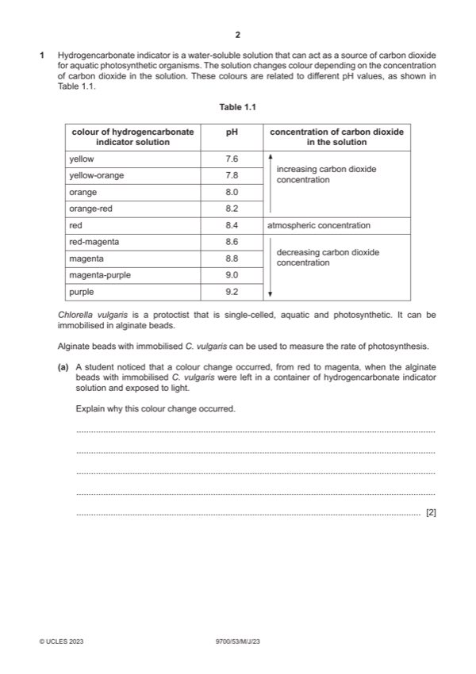

Question 1

Original paper page 2
Part 1(a) — solution
(red to magenta shows) increase in, pH / decrease in, concentration of, carbon dioxide ; 2
(in the light C. vulgaris) uses up / AW, carbon dioxide for photosynthesis ;
Mark points
- Include the ideas shown in the solution above.
Part 1(b)(i) — solution
light intensity ; 1
Mark points
- Include the ideas shown in the solution above.
Part 1(b)(ii) — solution
any eight from: 8
Mark points
- Include the ideas shown in the solution above.
Part 1 — solution
use, lamp / AW, at minimum of 5 different distances from plant
or
use, lamp / AW, with minimum 5 different power ratings / wattages (at same distances) ;
Mark points
- Include the ideas shown in the solution above.
Part 1(b)(ii) — solution
hazard risk mitigation
hydrogencarbonate irritant / allergy gloves / goggles / mask /
indicator PPE / medication
alginate beads / C. irritant / allergy gloves / goggles / mask /
vulgaris PPE / medication
heat (from bulb) burns / injury gloves / do not touch
Mark points
- Include the ideas shown in the solution above.
Part 1(c) — solution
will turn orange / yellow or pH decreases ; 2
respiration, produces carbon dioxide ;
Mark points
- Include the ideas shown in the solution above.
Part 1(d)(i) — solution
correct working ; 2
229 000 ;
Mark points
- Include the ideas shown in the solution above.
Part 1(d)(ii) — solution
1 correct number of cells counted / 24 ; 3
Mark points
- Include the ideas shown in the solution above.
Part 1(d)(iii) — solution
any two from: 2
Secchi stick is less accurate:
Mark points
- Include the ideas shown in the solution above.
Part 1 — solution
subjective / difficult to determine when circle is no longer visible ;
Mark points
- Include the ideas shown in the solution above.
Part 1 — solution
no, significant difference, between exclosures and grazed areas, for base of tree ;
or
there is a, significant difference, between exclosures and grazed areas, for middle and upper parts of tree ;
Mark points
- Include the ideas shown in the solution above.
Part 1 — solution
check named abiotic factor is similar (in exclosures and grazed areas) ;
Mark points
- Include the ideas shown in the solution above.